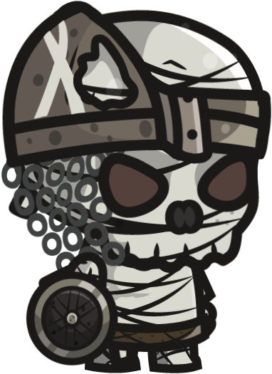

"The Lights of Shadows" é um jogo de plataforma e quebra-cabeça em 2D,
com uma atmosfera misteriosa e estética de sombras. Os jogadores embarcam
em uma jornada para restaurar a luz perdida em um reino encantado, enfrentando
desafios que envolvem manipulação de sombras e luz e resolução de quebra-cabeças.
Estória do Jogo
Em um mundo onde a luz foi roubada por uma entidade sombria, os habitantes do reino
vivem em um eterno crepúsculo. O jogador assume o papel de um herói corajoso escolhido
para recuperar a "Luz dos Elementos", fonte de toda a iluminação e vida no reino.
Ao longo da jornada, o jogador encontra criaturas sombrias e descobre segredos antigos
enquanto desvenda a origem da escuridão que assola a terra.
Objetivo Principal do jogo
O principal objetivo do jogo é percorrer diferentes ambientes sombrios e resolver
quebra-cabeças desafiadores para restaurar a luz em cada região. O jogador possui
a habilidade de manipular sombras e luz, alternando entre dimensões de luz e escuridão
para superar obstáculos, evadir inimigos e encontrar fragmentos da "Luz dos Elementos".
À medida que a luz é restaurada, o ambiente ganha vida, revelando novas áreas e segredos.
Ficha Técnica
Engine - Construct 3
Plataforma - PC
Mecânica - (plataforma, quebra-cabeça, 2D)
Dispositivos de Entrada - (Mouse e Teclado)
Personagens
Arion
Determinado:
Arion enfrenta desafios com coragem, determinado a restaurar a luz.
Habilidade Sombria: Possui a capacidade única de manipular sombras,
dando-lhe vantagem nas batalhas.
Umbriel

Inteligência Estratégica:
Umbriel planeja cuidadosamente, testando Arion com desafios
Manipulador das Sombras: Umbriel controla as sombras e distorce a realidade mudando
o
cenario de batalha.
Trilha Sonora
Lista de Elementos
Anel da Sombra: este anel dará a arion força, velocidade e poder de ataque adicional, poderá
obter durante o decorrer do jogo
Anel da Luz: este anel dará a arion força, velocidade e poder de ataque adicional, poderá
obter
durante o decorrer do jogo
Pedra Sombria: esta pedra transforma arion em sua forma sombria, ele ganha dano magico e
resistencia adicional durante 20 segundos, é um consumivel, após usalo
ela some do inventario do jogador
Pedra da Luz: esta pedra transforma arion em sua forma brilhante, ele ganha poder de ataque e
vida maxima adicional durante 20 segundos, é um consumivel, após usalo
ela some do inventario do jogador
Money: esta moedas podem ser coletadas após matar os inimigos ou concluir as fases do jogo
Mini Poção de vida: esta poção recupera a vida do jogador em 20%, é um consumivel, após usalo
ela some do inventario do jogador
Poção de vida:esta poção recupera a vida do jogador em 100%, é um consumivel, após usalo
ela some do inventario do jogador
Regras do Jogo
Regra #1:O jogador deve restaurar a "Luz dos Elementos", enfrentando desafios e inimigos ao
longo da jornada.
Regra #2:O jogador precisa matar todos os Boss secundarios, eles se encontram em tuneis que o
levaram para dimensão deles,
após concluir todos eles, a porta para chegar ao Boss Final sera aberta
Regra #3:O jogador deve guiar Arion através de ambientes sombrios, resolvendo quebra-cabeças
e
enfrentando inimigos para restaurar a "Luz dos Elementos" e
dissipar a escuridão que assola o reino.
Regra #4:Checkpoints estratégicos salvam o progresso automaticamente, proporcionando uma
experiência contínua.
Regra #5:Exploração minuciosa revela itens, artefatos e áreas secretas, proporcionando
recompensas valiosas.
Regra #6:O jogador tera 3 vidas, cada vez que morrer retorna ao ponto de salvamento
automatico,
caso perca as 3 vidas, retornará ao inicio do jogo
Regra #7:O combate ocorre em tempo real, com opções de ataque, habilidades especiais e
estratégias contra diferentes inimigos.